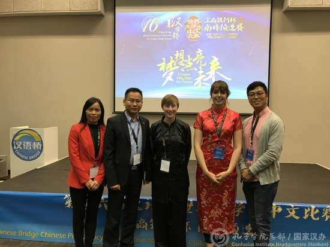
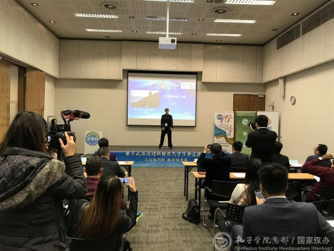

每日一篇——“汉语桥”故事 /美国姑娘穆征和的中国缘——“中文，我的绿水”
 592
592
来源：孔子学院总部/国家汉办
在2017年第16届“汉语桥”世界大学生中文比赛南非区预选赛现场，来自开普敦大学的参赛选手以题为《中文——我的绿水》的精彩演讲深深吸引了在场的评委和观众。这位说着一口流利汉语的女孩面庞清秀，一头短发显得精神干练，说话时总是面带微笑，一双忽闪忽闪的大眼睛透着自信的光芒。感情真挚的演讲，淡定朴实的台风，赢得了全场热烈的掌声，最终获得南非赛区中国决赛资格。她就是美国姑娘穆征和。

穆征和与辅导老师
走进中文世界
穆征和八年前开始学习汉语，而她与中国的情缘还要从高中谈起。在美国长大的她从小就是个独立爱思考的孩子。在寄宿学校上高中第一次接触中文让她兴奋无比，一回家便迫不及待地告诉爸爸妈妈说：“我要学习中文。”相比以前学过的法语和西班牙语，她发现中文对她而言不仅不太难，而且非常有趣。汉语学习给她打开了一扇新的门，新的窗，让她看到了一个不同的世界。
穆征和至今还记得她的启蒙中文老师如何将她带入汉字的奇妙王国，体验中文的神奇魅力。因为有了汉语课，寄宿学校里原本平淡单调的生活不再，取而代之的是与中文老师的促膝长谈，她们也因此成了最好的朋友。从此，汉语成了她学习生活的一部分，她开始对中国充满了好奇和向往，学习汉语的兴趣也越来越浓。汉语于她，就像母语一般亲切。
北京，家的感觉
和中文的不解之缘将穆征和带到了中国。16岁那年，她作为高中选修汉语课的学生代表来到了北京。妈妈听说征和要去中国，高兴地对女儿说：“孩子，我年轻的时候去了法国，那段日子对我产生了很大的影响。妈妈相信国外的经历会让你学到很多东西。”爸爸也鼓励女儿学习汉语。他说中国是世界四大文明古国之一，有悠久辉煌的历史和博大精深的文化。父母的支持让她更加坚定了自己的选择。
在北京一年的学习生活让她慢慢地了解了中国人和中国历史，也更加热爱中国文化。正如她在演讲里说的，“就在这一年，我爱上了汉字，爱上了汉字里那丰富多彩的意义和历史沉淀。因此，我还学习了书法，用毛笔细细体会汉字每一横每一竖所浮现的渊源和故事。”在北京，她是那样开心，丝毫没有身处他乡异地的孤寂感。相反，她结识了很多中国朋友，他们的热情友好让她在北京有了家一般的感觉。那是一段令她至今难以忘怀的日子。

穆征和表演太极
遨游文学海洋
从小酷爱阅读、勤奋好学的穆征和并不满足于只是日常汉语的交流和提高，她开始迷恋中文小说，想借助阅读中国文学更深入地了解中国这个文明古国的辉煌灿烂、感受中国汉字的无穷魅力。在老师的推荐下，她读的第一本小说是中国文学名著老舍的《茶馆》。这本或许有些中国学生都未必看过的书成了她最好的精神食粮。
她动情地说道：“读《茶馆》，让我看到了北京乃至中国的古往今来，也让我更加理解我认识的北京和中国。同时，我也被汉语语言的魅力深深吸引。语言的力量真是太强大了！”从老舍的《茶馆》到巴金的《家》，再到余华的《活着》……渐渐地，她发现自己成了中文书虫。一幅幅中国社会历史、文化和当代生活的画卷栩栩如生地展现在她面前，带她遨游一部部中国优秀文学故事的浩瀚海洋，令她如痴如醉。
因中国文化而改变
谈及中国文化的魅力，穆征和讲述了一个发人深思的小故事。在一次课堂讨论，当老师让学生写100个句子表达自己是一个怎样的人时，她写的第一句话是：“我是个独立的人。”而班上一位中国学生写的却是：“我是我妈妈的女儿。”正是短短的一句话让穆征和深深理解了中国人和美国人在家庭和亲情观念上的差异，也让她对中国文化产生了强烈的认同感。
穆征和发现自己因为从16岁便开始了独立的海外学习生活，所以性格独立，只关注自己的想法，自己的追求。而对中国文化的深刻理解让她重新定位了自己的家庭观念。现在，她学会了关心问候父母，并希望通过与他们更多的交流加深家人间的亲情。
我的中文梦
汉语学习成了穆征和人生的转折点。两次参加汉语桥的经历让她收获的不仅仅是荣誉和友谊。更重要的是，她能在汉语桥的平台上将自己在美国、南非和中国的汉语学习经历以及对中国文化的热爱用中文与大家分享。汉语桥比赛让她变得更加自信，也更坚定了她要回到中国继续学习、实现中国梦的决心。
对于将来的职业规划，穆征和早已成竹在胸。她说自己毕业后打算去中国的大学深造。她的梦想是用中英文为中美学生写小说，讲述两国的故事，架起中美友谊的桥梁。正如她在汉语桥比赛演讲时说的，“在我的生活中，中文就像那绿水，源源不断地向前流去，把我带到一个未知而又充满希望的未来，并终将带我到达梦想的彼岸。”